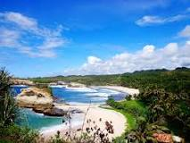
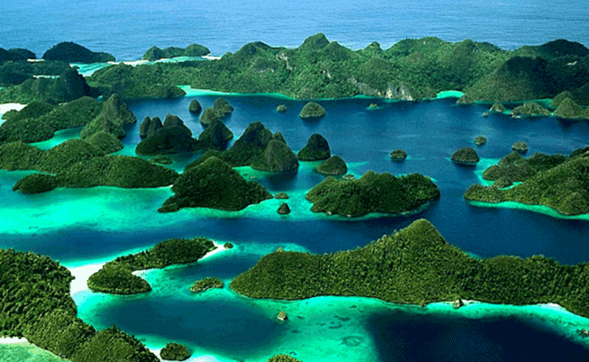
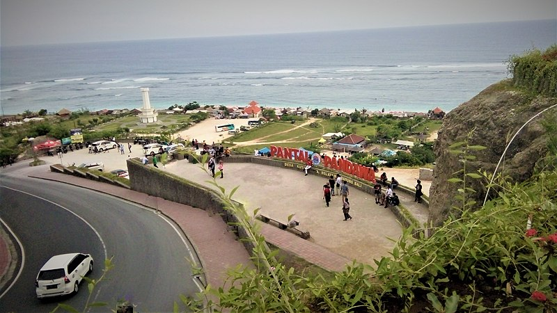

Pantai Klayar adalah sebuah pantai dengan pasir putih
dan batu karang serta tebing-tebing batu
yang mengelilingi. Pantai ini terletak di Pacitan, Jawa Timur dan berbatasan dengan Wonogiri, Jawa Tengah.
Tepatnya berada di Desa Sendang, Kecamatan Donorojo, Kabupaten Pacitan, Provinsi Jawa Timur.Tepatnya berada
di Desa Sendang, Kecamatan Donorojo, Kabupaten Pacitan, Provinsi Jawa Timur. Pantai Klayar adalah sebuah
pantai dengan pasir putih dan batu karang serta tebing-tebing batu yang mengelilingi. Pantai ini terletak di
Pacitan, Jawa Timur dan berbatasan dengan Wonogiri, Jawa Tengah. Tepatnya berada di Desa Sendang, Kecamatan
Donorojo, Kabupaten Pacitan, Provinsi Jawa Timur.
infirmasi Lebih Lanjut More
Info...
 Kepulauan Raja Ampat merupakan
rangkaian empat gugusan pulau yang berdekatan dan berlokasi di
barat bagian Kepala Burung (Vogelkoop) Pulau Papua. Secara administrasi, gugusan ini berada di bawah
Kabupaten Raja Ampat, Provinsi Papua Barat.
Pantai Klayar adalah sebuah pantai dengan pasir putih dan batu karang serta tebing-tebing batu
yang mengelilingi. Pantai ini terletak di Pacitan, Jawa Timur dan berbatasan dengan Wonogiri, Jawa Tengah.
Tepatnya berada di Desa Sendang, Kecamatan Donorojo, Kabupaten Pacitan, Provinsi Jawa Timur.Pantai Klayar
adalah sebuah pantai dengan pasir putih dan batu karang serta tebing-tebing batu
yang mengelilingi. Pantai ini terletak di Pacitan, Jawa Timur dan berbatasan dengan Wonogiri, Jawa Tengah.
Tepatnya berada di Desa Sendang, Kecamatan Donorojo, Kabupaten Pacitan, Provinsi Jawa Timur. Pantai Klayar
adalah sebuah pantai dengan pasir putih dan batu karang serta tebing-tebing batu
yang mengelilingi. Pantai ini terletak di Pacitan, Jawa Timur dan berbatasan dengan Wonogiri, Jawa Tengah.
Tepatnya berada di Desa Sendang, Kecamatan Donorojo, Kabupaten Pacitan, Provinsi Jawa Timur.
More Info..
Pantai Klayar adalah sebuah pantai dengan pasir putih dan batu karang serta tebing-tebing batu yang mengelilingi. Pantai ini terletak di Pacitan, Jawa Timur dan berbatasan dengan Wonogiri, Jawa Tengah. Tepatnya berada di Desa Sendang, Kecamatan Donorojo, Kabupaten Pacitan, Provinsi Jawa Timur.Pantai Klayar adalah sebuah pantai dengan pasir putih dan batu karang serta tebing-tebing batu yang mengelilingi. Pantai ini terletak di Pacitan, Jawa Timur dan berbatasan dengan Wonogiri, Jawa Tengah. Tepatnya berada di Desa Sendang, Kecamatan Donorojo, Kabupaten Pacitan, Provinsi Jawa Timur. Pantai Klayar adalah sebuah pantai dengan pasir putih dan batu karang serta tebing-tebing batu yang mengelilingi. Pantai ini terletak di Pacitan, Jawa Timur dan berbatasan dengan Wonogiri, Jawa Tengah. Tepatnya berada di Desa Sendang, Kecamatan Donorojo, Kabupaten Pacitan, Provinsi Jawa Timur.
Bali